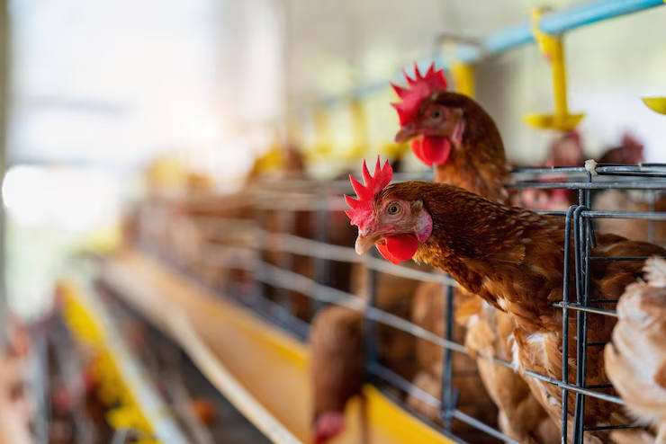

Revolutionizing Farm Management
Byaxiom is thrilled to present Byaxiom StaffManager, our flagship
staff management software designed to empower businesses of all
sizes with seamless and efficient workforce management. Byaxiom
StaffManager is a comprehensive solution that streamlines and
simplifies every aspect of staff management, enabling you to
optimize operations, boost productivity, and drive organizational
success.
Key Features:
-
Crop Management: Byaxiom FarmManager offers a comprehensive set of
tools for crop planning, monitoring, and analysis. It assists
farmers in managing crop rotation, tracking planting schedules,
and monitoring growth stages. The software provides real-time data
on weather conditions, soil moisture, and nutrient levels,
enabling farmers to optimize irrigation, fertilization, and pest
control activities.
-
Livestock Management: With Byaxiom FarmManager, farmers can
efficiently manage livestock operations by maintaining detailed
records of animals, including health data, breeding records, and
performance metrics. The software facilitates effective tracking
of feed consumption, milk production, and weight gain, allowing
farmers to make data-driven decisions to improve overall herd
health and productivity.
-
Inventory Management: The software provides a centralized platform
to manage farm inventory efficiently. It tracks the procurement,
usage, and depletion of agricultural inputs such as seeds,
fertilizers, and pesticides. Byaxiom FarmManager helps farmers
maintain optimal stock levels, generate purchase orders, and track
costs, minimizing wastage and ensuring timely availability of
essential supplies.
-
Financial Management: Byaxiom FarmManager incorporates robust
financial management capabilities, enabling farmers to track
expenses, revenue, and profitability. The software facilitates
budgeting, cost analysis, and generates comprehensive financial
reports. It assists farmers in evaluating the financial viability
of different crops and activities, optimizing resource allocation,
and maximizing profitability.
-
Field Mapping and Planning: The software allows farmers to
digitize and map their fields, providing a visual representation
of the farm layout. Byaxiom FarmManager supports the planning and
optimization of planting patterns, irrigation systems, and
machinery routes. It helps farmers identify potential areas for
improvement and implement effective land management strategies.

Benefits and Advantages:
-
Enhanced Efficiency: Byaxiom FarmManager automates numerous manual
processes, reducing administrative burden and saving valuable
time. It improves operational efficiency by providing real-time
data, analytics, and alerts, enabling farmers to make timely
decisions and take proactive actions.
-
Data-Driven Decision Making: The software collects and analyzes
data from various sources, empowering farmers to make informed
decisions. Byaxiom FarmManager provides valuable insights into
crop performance, resource utilization, and financial metrics,
enabling farmers to optimize their farming practices and increase
overall productivity.
-
Scalability and Integration: Byaxiom FarmManager is designed to
accommodate the needs of farms of all sizes, from small
family-owned operations to large commercial enterprises. The
software integrates seamlessly with existing farm management
systems and equipment, facilitating a smooth transition and
minimizing disruption.
-
Collaboration and Communication: Byaxiom FarmManager enhances
collaboration among farmers, farmworkers, and agronomists by
providing a centralized platform for data sharing and
communication. It promotes effective coordination, enabling
stakeholders to work together towards common goals and objectives.
-
Sustainability and Environmental Stewardship: Byaxiom FarmManager
supports sustainable farming practices by optimizing resource
usage, minimizing waste, and reducing the environmental impact of
farming activities. The software helps farmers implement precision
agriculture techniques, reducing water and chemical usage, and
promoting soil health.